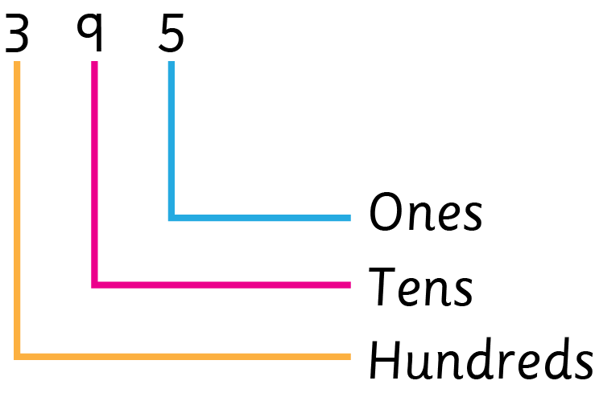

Example 2
Write the total value of each digit in 395.

The total value of 3 is 300.
The total value of 9 is 90.
The total value of 5 is 5.
Exercise 4
Write the total value of each digit in the following numbers:
1. 3 hundreds 1 tens 2 ones
2. 1 hundreds 0 tens 8 ones
3. 4 hundreds 2 tens 5 ones
4. 3 tens 5 ones
5. 2 hundreds 1 tens 5 ones
6. 4 hundreds 0 tens 3 ones
23